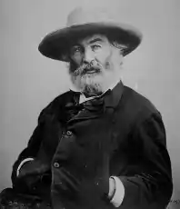
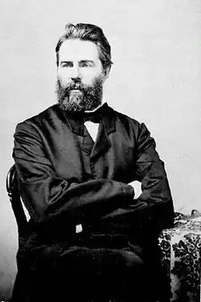

МЕЛВІЛ, Герман (Melville, Herman — 01.08.1819, Нью-Йорк — 28.09.1891,там само) — американський письменник.Мелвіл — одна із найяскравіших і значних постатей американського романтизму. Недооцінений сучасниками, він був уславлений лише в XX ст. і з запізненням, але беззастережно прийнятий у пантеон великих майстрів національної культури. Батько Мелвіла був комерсантом, предки котрого брали участь в американській революції XVIII ст. Мати — голландка з походження, з багатої родини, намагалася дати дітям релігійне виховання. Майбутній письменник гордився родинними традиціями. Дитинство Мелвіла минуло у великому домі, в достатку, навчався він у привілейованій школі. Несподівана смерть батька у 1832 р. змусила Мелвіла, котрий не бажав обтяжувати близьких, розпочати самостійне життя: він працював клерком у банку, шкільним учителем, служив на хутряній фабриці. У 1837 р. вперше вийшов у море юнгою. У січні 1841 p., охоплений жаданням пригод, завербувався матросом на китобійну шхуну "Акуншет" (вона згодом слугувала за "модель" для вельбота "Пеквод" у романі "МобіДік") і вирушив у плавання. На кораблі Мелвіл зіткнувся з жорстокими порядками. У липні 1842 р. під час стоянки в гавані Нукухіві (Маркізькі острови) він разом із товаришем Тобі залишив "Акуншет" і провів, вочевидь, близько місяця, з місцевим племенем тайпі, за яким закріпилася зловісна слава канібалів. Від аборигенів він утік на сіднейській шхуні "Люсі Енн", мандрував деякий час, поки не осів на Гаїті. Там він влаштувався на американське військове судно "Юнайтед Стейтс" і повернувся на батьківщину в жовтні 1844 р.
Майже три з половиною роки, проведених на морі, збагатили Мелвіла неоціненним запасом вражень. Це лягло в основу багатьох книг М., визначило своєрідність його творчості як видатного митця-марініста. У 1844 p. Мелвіл оселився у Нью-Йорку, ввійшов у літературне середовище, зійшовся з В. Ірвінґом, Н.Готорном (творчість якого викликала у нього захоплення), з публіцистом і філософом Р. В. Емерсоном. З пожадливістю взявся він за вивчення філософії, зокрема таких німецьких мислителів як Г. В. Ф. Гегель, І. Кант, брати Шлегелі; великий вплив справила на нього романтична поезія, особливо Дж. Блейка і П. Б. Шеллі. У цей час сформувалася політична філософія Мелвіла: його "нещадний демократизм", стійка ненависть до рабовласництва, до будь-яких форм гноблення та нехтування людини; не приховував він і критичного ставлення щодо певних недоліків державної системи, яка складалася у США.
У 1846 p. Мелвіл дебютував книгою "Тайпі" ("Турее"), що ґрунтувалася на "маркізькому" епізоді його життя і була тепло прийнята читачами. У насиченій багатим, свіжим етнографічним матеріалом, пронизаній своєрідним руссоїстським пафосом, книзі змальовано в дусі романтичної утопії життя племені тайпі на лоні прекрасної первісної природи, їхній побут, звичаї і традиції, архаїчну матеріальну культуру. Оспівується краса дівчини Файявей, доньки вождя племені, котра покохала героя-оповідача. У книзі містяться випади проти місіонерів та антигуманної "цивілізації", враженої вадами, якій, за контрастом, протиставляється ідилічний побут аборигенів, людей добродушних, безпосередніх і дружелюбних. Успіх першої книги спонукав Мелвіла написати її продовження — "Ому" ("Отоо", 1847), основою якій послужило його мандрівне ЖИТТЯ на Гаїті. Книга близька за формою до роману, вона починається з опису надважких умов служби на торговельному флоті, брутального поводження з матросами, що спричинило бунт команди. Матросів висадили на Гаїті та посадовили у в'язницю. Якщо тайпійці були в Мелвіла помітно ідеалізовані, то гаїтяни показані вже без прикрас. Ще один твір, який відобразив "морський" досвід Мелвіла, — роман "Білий бушлат" і "White Jacket", 1850), в якому описано непривабливий побут американського військового корабля: рядових матросів постійно принижують, офіцери дошкуляють їм дріб'язковим прискіпуванням і тиранією. Тут виділяються постаті молодого кадета, котрий насаджує дисципліну з допомогою різок, і корабельного хірурга К'ютікла, справжнього м'ясника, людини з фальшивими зубами та перукою, котрий чинить жорстокі експерименти над своїми пацієнтами. Це був зразок "морського роману". Усі ці твори підготували з'яву мелвілівського шедевру, роману "Мобі Дік, або Білий Кит" ("Moby Dick, or White Whale", 1851), зарахованого сьогодні до вершин світового письменства. Спершу Мелвіл задумував книгу як один із різновидів морського роману про китобійний промисел, але поступово його план і структура ускладнювалися, набували філософської масштабності. Письменник розсував звичні жанрові та стильові рамки роману, який "акумулював" у собі елементи побутописання, алегорію та символіку, документалістику та високу патетику, реалії китобійного промислу та корабельного побиту і релігійно-філософську проблематику. Виявив себе Мелвіл і як марініст, що відтворює незабутні морські краєвиди; океанічна стихія, мінлива, буйна, непокірлива — одна із головних дійових "осіб" у романі. Океан різноманітний, багатоликий, сповнений таємниць. Мелвіл був його натхненним співцем. Як зауважив критик В. Торп, письменник "виявив велику сміливість, зробивши героями роману американських китобоїв, прототипи котрих він зустрічав десять літ перед тим під час плавання на "Акуншеті". Грандіозне дійство близьке до п'єс Софокла та В. Шекспіра з тією різницею, що актори розігрують його на вкритій жиром палубі китобоя. Сила мистецтва Мелвіла перетворює її у сцену, гідну самої дії, але й у цій самій обстановці криється прихована сила". Роман містив у собі "театральні", сценічні компоненти: у пору його написання Мелвіл захоплено читав твори Шекспіра. Сюжет роману — перипетії полювання китобоя "Пеквод" за таємничим велетенським Білим Китом, що виступає як щось більше, ніж могутній мешканець морської стихії; він — втілення одвічного зла, якого слід уникати морякам, котрі бажають благополучно повернутися в рідний порт. Капітан вельбота Ахав — романтичний герой, людина, одержима маніакальною пристрастю здолати Білого Кита, "темну невловиму силу, існуючу споконвіку"; в останній сутичці з ним він позбувся ноги і користується білим кістяним протезом. Він прибиває до щогли золотий дублон — винагороду тому, хто перший угледить у морі ненависного йому могутнього кашалота. Поряд з Ахавом — багатонаціональна команда "Пеквода", що ніби символізує людство в мініатюрі. Перед нами різні типи людей: старший помічник Старбак, м'який за натурою, добрий християнин; другий помічник Стаб, удачливий та схильний з полегкістю ставитися до небезпеки; третій помічник — недалекий Фласк; матроси: таємничий азіат Федалла, полінезієць гарпунер Квіквег, приятель Ізмаїла, героя-оповідача, африканець Дагу; чорношкірий слуга Піп; гарпунер індіанець Тештігу. Після відчайдушної триденної погоні "Пек-вод" наздоганяє Білого Кита. Ахав уражає його смертельним ударом, але й Кит тягне за собою в безодню корабель. Зі всього екіпажу рятується лише Ізмаїл, персонаж значною мірою автобіографічний; його підбирає китобійне судно "Рахіль". Але розмаїті колізії, подієвий план не вичерпують багатогранного змісту роману. У ньому "просвічують" кілька смислових, стильових рівнів і планів. Значний "китологічний" пласт — десятки сторінок, де змальовані звички кашалотів, їхня анатомія, "технологія" промислу. Взагалі твір Мелвіла — справжня енциклопедія знань про китів, які не лише водяться в морях і океанах, але й наче злітають до висот релігійно-філософських категорій. "Мобі Дік "містить у собі й елементи соціального роману, особливо там, де йдеться про китобійний промисел, службу на судні. Слід пам'ятати, що в часи Мелвіла промисел китів був зовсім не екзотичним заняттям, а важливою галуззю виробництва у США, у якій були задіяні сотні суден, десятки тисяч людей. Найскладнішою є філософія роману, насиченого символікою, алегоріями, алюзіями біблійного, історичного, легендарного характеру, посиланнями на праці вчених, мислителів, релігійних діячів. Саме цьому аспекту роману присвячено чимало робіт дослідників, особливо, звичайно ж, американських, що пропонують різноманітні тлумачення його глибинного смислу. Ю. Ковальов, один із найавторитетніших знавців американського романтизму і творчості Мелвіла, вважає, що автор "Мобі Діка" через сюжетні перипетії твору досліджує універсальні закони буття і діяльності людського розуму. Мелвіл приходить до матеріалістичних висновків, вважаючи, що у Всесвіті немає вищих сил, які спрямовують життя людини та суспільства, народів і держав, немає ні Бога, ні абсолютного духу, тому людині немає на кого перекласти відповідальність. Своїм романом Мелвіл доводив неправомірність надії на втручання вищих сил; людина сама відповідальна за свою долю і мусить покладатися на власні сили. Кращий твір Мелвіла, який видавався сучасникам "дивним", не отримав за життя автора читацького визнання. Шлях письменника тривав ще чотири десятиліття, але він поринав у забуття. Йому довелося заробляти на життя службою чиновником на митниці. Поміж тим з-під його пера продовжували виходити цікаві твори. У романі "П'єр" ("Pierre", 1852), що значною мірою має автобіографічний характер, описані складні психологічні колізії, які переживає письменник П'єр Гленденнінг, котрий жертвує коханням задля родинного обов'язку. У романі "Ізраель Поттер" ("Israel Potter", 1855) М. звертається до історичної теми; головний герой — учасник війни за незалежність, рядовий солдат, патріот своєї батьківщини. Захоплений у полон, він лишень через 45 років повертається в Америку, де виявляється забутим, і помирає у злиднях. В останній повісті "Біллі Бадд" ("Billy Budd", вид. посмертно в 1925 p.) Мелвіл повертається до морської тематики. Герой, юний матрос Біллі Бадд, недосвідчений, наївний, стає об'єктом заздрості і злоби офіцера Клеггарта, котрий брехливо звинуватив Біллі у намірі вчинити бунт на кораблі. Викликаний на допит до капітана, Біллі Бадд, приголомшений зведеним на нього наклепом, вбиває Клеггарта. Капітан, котрий співчуває Біллі, змушений відправити його на шибеницю; але, пішовши з життя, Бадд зостається жити як легенда в матроському середовищі. Мелвіл створив низку новел, що по праву належать до кращих зразків цього жанру в США. Серед них "Беніто Серено" — про повстання негрів на борту корабля і "Писар Бартльбі" — про гірку долю маленької людини. Морально-філософські та релігійні пошуки Мелвіла останніх років частково відобразилися у його поетичних творах — збірках "Вірші про війну" ("Battlepieces", 1866), "Джон Марр" ("John Marr and Other Poems, 1888), "Тімолеон" ("Timoleon", 1891), а також у романі у віршах "Кларель" (1876). Українською мовою твори Мелвіла перекладали Ю. Лісняк і В. Корнієнко. Б. Гіченсон